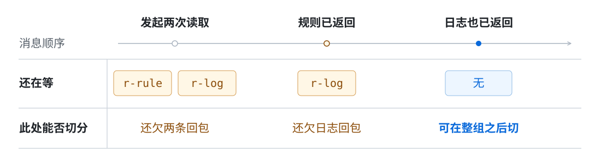

上下文放不下时，哪些内容还能缩短
规则文件只有几十行，会员测试日志却回了近一万个字符。两份 Read 结果都进了历史，再问模型一句“核对一个过期会员”，若存要连这些旧消息一起发出去。
先缩短日志，模型仍认得那是刚才那次读取的结果。可假如窗口还塞不下，准备把旧历史写成摘要，切点就不能随便选。把发起两次读取的消息压进摘要，只留后一条回包，这份历史虽然短了，下一次请求却连一组完整的调用都交不出来。
一份长日志带来的两道题
先看发出的两次读取
更早的对话：用户定价要求、已执行的检查 assistant：Read(rule.md) → r-rule，Read(check.log) → r-log tool(r-rule)：会员规则 tool(r-log)：测试日志，约 9,800 个字符 user：再核对一个过期会员
这两次读取由同一条 assistant 消息发起。每条回包带 tool_call_id，程序凭它把日志还给 r-log。如果只需腾出一点空间，改这一条的正文就行。如果要让更早的对话退出请求，才需要选切点。
切点恰好落在两个回包之间
在 tool(r-rule) 后切一刀，摘要拿走发起两次读取的记录，原样保留的部分只剩 tool(r-log) 和追问。模型即使从摘要读到了“查过日志”，服务端仍找不到 r-log 对应的结构化调用。想保留这份日志，就把切点退到 assistant 那一条之前。这样规则和日志一起留下，追问也还在末尾。整组都用完时，组后同样是合法边界，可以把这几条一起交给摘要。
下一次请求还剩多少空间？
聊天框只多了“再核对一个过期会员”，可程序要把那份日志、系统规则和当前可用的工具定义都发过去。若存用实际客户端的 Chat 或 Responses 请求构造逻辑准备请求体，再估算消息、调用参数、工具定义和独立的指令字段。文字按 UTF-16 长度粗估，图片块按固定开销计入。这个数字用于决定何时动手，服务端回包才给出实际输入用量。 实际请求的构造与检查 · 输入估算
先给回答留位
用一个 20,000 token 的窗口来算，输出上限为 5,000，剩余 15,000 的 8% 是 1,200。若存还用窗口的 80% 设一道压力线，最后取两条限制中较紧的一条。
开始压缩的输入阈值 = min(20,000 × 80%, 20,000 − 5,000 − 1,200)
= min(16,000, 13,800)
= 13,800 token估到 14,000 就够触发压缩。输出上限未显式配置时，程序可按窗口缩小默认上限，并把该值用于实际发送。发前检查也有次数上限。若估算漏过了服务端真正的上限，服务端的超限回包仍会走超限恢复。 输出、余量和近期预算
先裁长回包，再给旧对话写摘要
把日志正文变短
先看刚才那份会员测试日志。想知道跑了哪个用例、结果怎么样，开头的测试名称和末尾的汇总就够用。以后要查过期会员究竟断言了什么，那一行可能夹在中间，得找回原文。r-log 的正文有 9,800 字符，超过 8,192。程序保留开头 4,096 字符和末尾 1,024 字符，中间标出省略，随回包留下原文归档 ID。调用消息、r-log 的配对编号和其它消息仍在原位置。图片块继续保留，受保护的回包和 TaskWait 回包会跳过裁剪。 回包正文怎样裁短
现在只缩短了一条回包。把它放回同一份请求再估一次。如果 14,000 降到约 12,500，就已经低于刚才的 13,800，旧对话可以原样保留。要是这一刀省得还不够，才要挑一段旧对话来写摘要。
按编号找能切的地方
只改一个条件。更早的对话还有几轮，裁完这份相同的 r-log，请求估算仍超过 13,800。程序从近期往前算保留区，初选的切点刚好在两条回包之间。这里需要看一眼记录到这一刻还欠哪些结果。

读到 assistant 的两个调用 pending = {r-rule, r-log}
读到 tool(r-rule) pending = {r-log}
读到 tool(r-log) pending = {} elif message.get("role") == "tool":
call_id = message.get("tool_call_id")
if call_id not in pending:
raise CompactionError("工具结果缺少匹配调用，原上下文保留。")
pending.remove(call_id)
balanced.append(not pending)
if pending:
raise CompactionError("工具结果尚未配对，原上下文保留。")
return balanced读到第一个回包，pending.remove(call_id) 只划掉 r-rule。r-log 还在集合里，代码把这一位置记为不可切，然后把切点往前退到整组之前。CoreCoder 的 _safe_split 在这个正常例子里也会向前退两步，直到留下的首条消息是发起读取的 assistant。 若存的配对检查 · CoreCoder 上下文篇
现在让日志回包误记成 r-rule。CoreCoder 的切点函数依然看到两条角色为 tool 的回复，照样后退。若存扫到第二份回包时，r-rule 已经被划掉，于是这次压缩报错，原历史保留。窗口仍紧，可这时留下原始记录更值得，总比用一段摘要盖掉哪一次读取缺了结果好。如果第二份回包根本没到，扫完历史时 pending 还留着 r-log。最后的 if pending 同样会停止压缩，原历史还在。
切点还要照顾接下来真会用到的材料。默认给近期消息留出的估算额度是扣除输出后的 16%。上例中还没得到处理的“再核对一个过期会员”也有保护，哪怕目录事实追加在它后面。已记入历史的后台交付、恢复和等待信息也有保护。候选保留主系统提示和已有的启动 Hook 控制消息，在末尾重挂有效的当前任务清单。这样新摘要即使漏写了某条待办，程序仍能把已经登记的状态交给下一次请求。 应留在模型历史中的输入 · 当前任务清单的来源
摘要什么时候真正生效？
摘要请求读原始前缀
切点现在在两次 Read 之前。摘要模型收到切点前的连续原历史，末尾再加一条写摘要的指令。若较旧的日志在这一轮刚被裁短，且落在切点之前，摘要请求仍读到裁剪前的正文。留在切点之后的 r-log 则只出现在随后组装的新历史里，这里可用裁短版。若那份旧日志在前一次压缩就已经裁剪并提交，当前历史能给出的原前缀只有缩短版，当时的全文要另查归档。 摘要输入与新历史的组装
两份请求各算自己的预算。原始前缀加摘要指令和摘要输出预留，若已塞不进摘要模型的窗口，本轮停在旧历史上。返回半截、空内容或工具调用也会拒绝，摘要和整份新请求还要各自证明确实缩短。模型给出了可读的文字，只够开始准备提交。 摘要请求和回包检查
检查点和原文入口一起确认
假设候选摘要写了“会员日志已保留，检查通过”，末尾附 summary-demo-2。如果刚生成就放进活会话，存盘一旦出错，当前请求可能拿着新摘要，重开却恢复到旧历史，连摘要上的原文入口也可能查不到。
若存先核对模型和旧投影有没有变化。随后把候选、原文来源和会话检查点一起提交，收到确认才给 session.messages 换值。新用户输入如果已经改变了旧投影，这份候选要作废。保存结果不明时，内存使用之前确认过的那份历史，本轮停止，等确认之后再处理，避免拿未知的提交状态接着发请求。 提交后替换模型历史 · 检查点与原文归档
已有的回归测试把这两个现场分开。第一次故意让检查点写入失败，断言重新读出的归档和检查点都还是提交前的内容。第二次让提交成功，只丢确认回执。按原操作号和请求指纹仍能查到检查点第 2 版。重新打开存储后，用同一操作号和相同输入再提交，归档里仍只有一条摘要。查看回滚和回执丢失的断言
切点两侧各要留下什么？
假设 r-rule 很长，排在后面的 r-log 含下一步必须逐字核对的失败断言。候选切点落在两条回包之间。你会往哪里移？如果两份材料都已经用完，另一种选择能换来什么？
核对你的决定
退到发出两次调用之前。两条回包和调用一起留在近期区，并核对日志是否经过裁剪，缺失的断言要按归档 ID 查回。空间不够时先裁其它长回包，再算实际请求的预算。若整组都用完，且近期与未处理输入保护允许，组后也可切，腾出的空间更多，代价是日后逐字核对要回查原文。若存当前实现从初选位置向前退。
这一章带走什么
- 窗口紧时先算下一次真正要发的请求。用户没加字，工具说明变长也可能触发压缩。
- 裁日志时可以只动回包正文。给旧历史写摘要时，切点要让同一组调用和回包留在同一侧。要是只剩日志回包，下一次请求里就找不到发起它的读取。
- 摘要写好后还有一次提交。等检查点和原文入口一起保存确认，下一次请求才用新历史。这样重开会话时仍能找到摘要所指的原文。
新历史接上了，摘要只记得“检查通过”。要回答过期会员究竟测了什么，得回查哪条命令得到了那句“通过”。
面经自测
上下文越来越长，压缩时怎样决定保留哪些信息、丢掉哪些内容？
字节跳动 · 一面 · 面经原帖 · 题意转述
展开参考回答
我先留住用户接下来还要我遵守的要求、没做完的事和马上要用的证据。大段旧日志先缩短，较早的完整对话才考虑写成摘要。
若存同时读规则和日志时，要把请求和两份回包放在同一边。只留下“日志通过”却丢掉它对应的请求，下一轮就少了依据。
你说快到上下文上限才压缩，程序怎么判断已经快满了？
未具名半导体公司 · AI 相关岗位 · 面经原帖 · 题意转述 可回看 第 2 章 第 7 章
展开参考回答
估算下一次真正要发的整份请求，把消息、工具说明等都算上，再给输出和估算误差留空间。用户没多说一句，新公布一批工具也可能把窗口占满。
工具返回的内容太长，哪些可以先裁掉？
字节跳动 · 一面 · 面经原帖 · 题意转述
展开参考回答
先缩重复而且能回查的日志正文，保留开头、结尾、调用编号和原文入口。图片、受保护的等待结果等仍按各自规则保留。
同一批的规则文件已经返回，日志还在路上，为什么这里不能切开？
若存设计题
展开参考回答
已经有一份裁短的日志了，若存为什么还给摘要模型看原来的前缀？
若存设计题
展开参考回答
生成摘要和保存到数据库之间，怎样配合才能继续原任务？
未具名半导体公司 · AI 相关岗位 · 面经原帖 · 题意转述
展开参考回答
先把摘要作为候选，将摘要、来源和会话进度一起确认保存，再让主会话改用新的历史。保存失败可以继续用原来的那份。
窗口写着两万，估计只用了不到一万五，为什么已经要压缩？
若存设计题